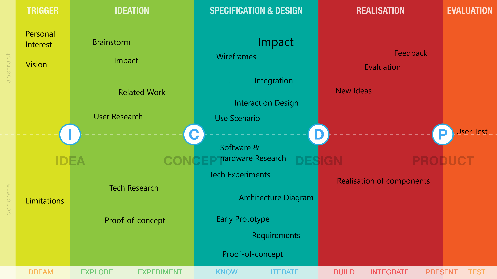
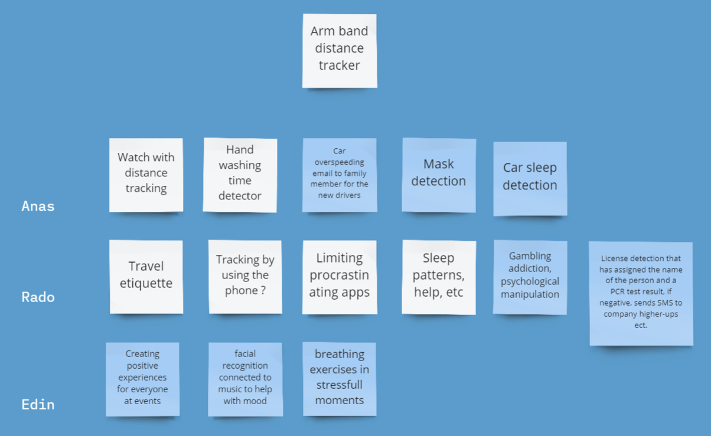
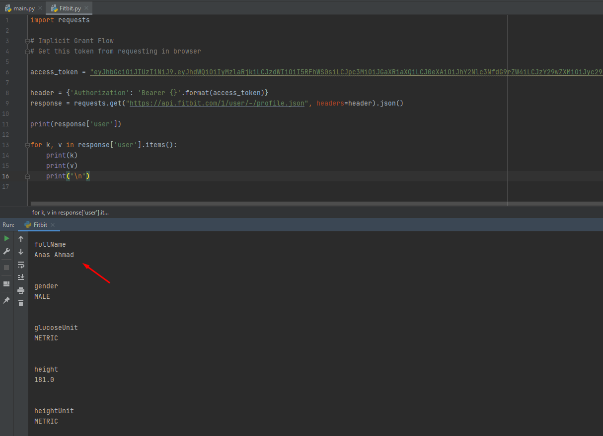
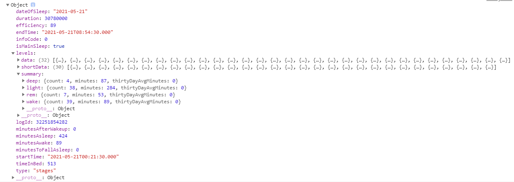
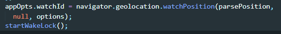
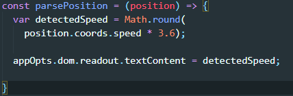

Welcome to my portfolio!
My name is Anas Ahmad and I am 24 years old. I'm an undergraduate at Fontys University of Applied Sciences,
where I'm majoring in software engineering. This portfolio reflects on semester 4 of my Creative Technology
specialization. While my academic history is in software, but working with hardware and software has piqued
my interest since the first semester. After all, I'm just getting started with this subject.
Semester Kick-off
The semester began with a kick-off in which the semester setup was briefly introduced.
What is creative technology?
Creative Techonology is a combination of information, holographic systems, sensors, audio/video technologies and image, among several others with artistic practices and methods.
The Creative Brain (Movie)
Neuroscientist David Eagleman taps into the creative process of various innovators while exploring brain-bending and risk-taking ways to spark creativity.
Lessons
There are few lessonsthat I learned from this movie about creativity.
Take ideas from one place and apply it to other places.
Refashion existing ideas
Original doesn’t only mean creating something completely new. It’s also creating new combinations by using what’s already around us
Gold cannot be only found in jewelry shops, it can also be found in rivers. The same way, creative minds can also be found in prisons.
A crucial part of learning new things is being confused. People around you might think you’re weird and crazy.
Push boundaries: Creativity is getting out of your comfort zone to try and think Different.
Everyday creative thoughts
One of the best ways to be creative is to set two alarms a day and reflect on your creative thoughts. I will be answering the following questions:
1. Where did you use your creative thoughts?
2. Where you could called upon your creative thoughts?
Thoughts/Ideas
Below you can find a summary of my creative thoughts and ideas of 4 days
Day 1
Noon
1. Letterbox scanner: In this current situation every letterbox should have built-in sanitizers, so that your post will be sanitized before it gets to you.
2. There should be an easier way to clean the snow from cars.
Evening
1.Instead of buying a new monitor, Raspberry pi could be connected to a laptop through an hdmi port.
2. Connecting Raspberry pi with laptop, i.e., it is possible.
Day 2
Noon
1. WhatsApp should have the option to make groups for privacy settings. Once you select a group of people you should be able to choose if they can or cannot see your
status, profile picture, etc. It’s time consuming to have to select a specific group of people every single time
2 .Melting the snow from the roads.
Evening
1. A book that can give you specific information like telling you what page you were reading before you left off.
2. How can we clean the roads in an easier and a more automated way?
Day 3
Noon
1. A Fork that measures the temperature and also check how clean the food is.
2. Working with raspberry pi, exploring it more.
Evening
1. Corona virus detecting glasses.
2. Better way to use navigation system, instead of having to look at one side for the navigator.
Day 4
Noon
1. The Erik concept for designing the logo can be used to create The Vikings' famous quotes logo.
2. Use the python code from erik github, that could be used by myself. I can add something in it myself.
Evening
1.Beard Trimming reminder app or machine can be created. e.g. it can remind you when you forget to trim your beard.
Log Book
To be creative you can also create a log book and keep track of all your daily interactions with technology.
There are different ways to do this, I chose to set an alarm every half an hour to update my log book.
Below you can find the details of my interactions with technology for two days long.
Day 1
17:00 üòÅ Watched cricket on mobile.
I am happy because I watched cricket on my mobile instead of on TV
17:30 üòÅ Checked Dagcard
I looked for a train day card online instead of going to any train station and ask anyone in person. This indeed saved a lot of my time.
18:00 üòÅ Contacted Friend
I wanted to talk to my friend, which I did through my mobile phone. If there was no phone, I would have to go to him which would of course take a lot of time
18:30 üòÅ Notes written
To take the notes, I used the notepad instead of writing them on an actual notebook.
10: 05 üò´ Ordered food online
To eat I just ordered online through an app, however I could save me some money by cooking myself.
Day 2
17:00 üòÅ Used LEDs in raspberry pi
I am happy because I learned to use LEDs through breadboard and raspberry pi 4
18:00 üòÅ PIR motion sensor used
I am happy because I used motion detector in my practice.
19:00 üòÅ Raspberry Pi camera module
I am happy because I learned how to use camera with motion detector PIR.
20:00 üòÅ Updated raspberry pi
To update raspberry pi, I simply used my Windows terminal instead of starting it through vnc.
21: 00 üò´ Asked google to set an alarm
To set an alarm I asked google by speaking, however I could create an alarm myself. I am sad in a sense, technology is making me more lazy.
5 years comparison
In this section I tried to compare the interactions mentioned above with 5 years ago and 5 years in the future. To get the correct answer I asked myself the following 3 questions
as:
1. Think 5 years back from today. Which technology did not exist or did you not use back then?
Most of the technologies with I had the interactions were available also 5 years ago. But if look back how I used to set alarms 5 years ago, then I
can clearly notice that I used to do it manually. However, now I simply ask google assistance to set an alarm for me. Other than that if I think about
how we used to make food orders, then I remember that either I used to call the restaurant or go to the restaurant myself to get the food and plus it was hard to choose from menu that way.
But now I simply visit the website or apps like thuisbezorgd and I can choose from plenty of restaurants and make an order in just few minutes. Now is definitely much easier.
If I talk about raspberry pi then there were several things that were not so popular back then, for example Object Detection. But now it is very common, especially in smart cameras.
However, it does not have a big impact in my life but it is playing an important role in security systems for instance human detection, face detection, face recognition, and more.
2. Does this say something about the quality of life then?
In my point of view the quality of life is somewhere in the middle right now. On one hand we have become lazy. We rely on technology for the smallest things, for example food. We tend to order food even
though we could get the food ourself. On the other hand, the quality of life has improved in many ways because of technology. I am thinking of different fields. Just to give an example: the security systems
nowadays have improved drastically.
3. What about the future? What will be normal in 5 years which we don’t have know?
Technology has been improving a lot, especially from the last 3 to 4 decades. In this crucial time, IOT plays an important role in Healthcare system.
Therefore, I believe in next 5 years there will be some kind of a disease prediction devices.
Erik Driessen's Ideas
Erik Driessen was our guest lecturer and he is a creative man who inspired me with his ideas. What inspired me the most was that you can find creativity anywhere. One of his ideas is to generate
visualization by analyzing music lyrics (text) for sentiment using Google Natural Language API. Which he printed on T-shirts.
Here
is the link to his idea.
To experiment his idea I also decided to visualize one of my favorite albums (Never Saw Me Coming)
of Faydee. One of the several visualizations results is this:
And after some simple designing and effects I created a logo which can be seen on the right side.
And then Erik's idea was to put this logo on a t-shirt. And I also did the same thing, which can also be seen on the right side.
On the left side my vision board can be seen. But that is not only it.
If you look into all the projects you will realize that there are two things that are common: Create ideas and Create something for people.
Below I explain my vision by each project.
Individual Project
What is my vision in this project?
My vision remains the same in the larger picture: develop something for people and come up with ideas,
but I'd like to develop something for people that they can utilize in COVID-19. As a result, I created the COVID Vaccination Detection Glasses concept.
People will be able to easily observe who has been vaccinated and who has not. That's exactly what I'm hoping to do with this project. People in public settings will have more confidence as a result.
Imagine going out and not having to worry about the Pandemic.
Duo Project
What is my vision in this project? This project, like the Individual project, is part of the Create something for people theme.
But there is more to this initiative; for example, it has the ability to communicate feelings without saying anything.
Consider if you are having trouble expressing how you're feeling right now. All you have to do is stand in front of a camera and your present feelings
will be portrayed through the visuals. The goal of this project was to produce something for individuals that would assist them in making relationships,
whether with strangers or family members.
Client Project
What is my vision in this project? This project has a direct link with my bigger vision: Create something for people. I want to create something that will last forever, or at least for
a very long period. Because it concerns sleeping habits. I don't only wish to enhance the consumers' sleeping habits. But I also want to assist users understand the significance
of sleep, especially those who truly need it. For example, if you don't get enough sleep, you're more likely to have an accident so Our phone will begin to vibrate,
signaling that you should slow down.
What is my idea
In this crucial time. We all want to be safe therefore, my first Idea was to create a AR-glasses which can detect the distance between you and the
person around you and inform you to keep some distance. But then I realized along with my teacher Geert Jan that this idea was not making much sense that is why we came up with another idea.
New Idea
COVID-vaccinators detecting by face
Basically, the idea is that you can see through your glasses if anyone is COVID-vaccinated or not. Although, in this project pictures will be stored
locally to compare faces but it can be extended to use the database and APIs.
Implementation
Programming Language
To achieve my target first of all I had to realize what programming language I should choose. There were different options such as Matlab, Python, Java and C/C++/C#.
Although I had experience with Java, C++ and C# but I have always been very curious to learn to Python. And Python is indeed one of the most popular languages for such
projects. Therefore, I decided to choose Python, however to learn the basics of Python that I took a short course (10 hours long) On Udemy.
Now when I was done with the course, I wanted to begin with my project. But then I realized that object detection or face recognition was not possible alone in Python.
I had to learn other libraries such as Dlib, OpenCV to perform such tasks.
That is when I started learning OpenCV, I followed a short course on YouTube
of one of the instructors that I was following during the project.
I used Face_recognition library for face recognitions along with cv2 to compare with the existing faces.
In case you are interested in code, here is the link to the project on Github.
Prototype Goal
In the beginning I was wondering more about creating
an end product, but then we got a workshop on Prototype which made me realize that
Lo-Fi prototype does not have to be an end product. It is just one idea for user testing. Of course, it gave me some relief. And
to begin with prototype I first had to decide where I want to attach the camera.
Idea 1
One idea was to attach the camera on one of the sides of the glasses
Idea 2
Another idea was to attach the camera in the middle of the glasses
I preferred the idea of attaching the camera in the middle, this way camera can have more for detections, however to correctly approach this idea
I followed the idea of David Neumann from Humber College Canada. The idea was pretty simple, all I needed was one straw, contact cement, novelty glasses
and a clothes pin.
And then connect the camera to glasses.
Example
Prototype Setup
To start with actual prototype, first of all I need to have a smaller camera which could be attached with the glasses. The camera I had was night vision
camera, which was of course not a suitable option for my project. Then one day I just realized the it is possible to remove the infrared LEDs from both sides
of the camera. Therefore I simply removed the parts I did not need for my project.
Camera with Infrared LEDs
Camera without Infrared LEDs
Prototype Version 1.0
Below you can see how I attached the camera in the middle of the glasses
Result
And here is video of working results.
*hints: Green rectangle over the face means, the person is COVID-vaccinated, and red rectangle means not.
Recommendations
Since Raspberry pi can only process 0.9 FPS, and I have used Dlib with HOG model,
that is why the performance is not very fast. Therefore, I have few recommendations written below:
Hardware
NVIDIA GPUs
You can consider NVIDIA GPUs as hardware instead of Raspberry Pi.
Software
OpenCV or Dlib
If you are willing to deep dive into better performance and you have time for that, I would for sure recommend
face-detection with OpenCV - DNN method as it is pretty fast and very accurate,
even for small sized faces. It also detects faces at various angles.
However, if you do not want to go very deep in the topic, then I would recommend Dlib - HOG as it is one of the fastest methods on CPU.
but it does not detect small sized photos or from different angles.
If you want to have a best performance, you should try YOLOv3 with NVIDIA GPUs. That will give you an extremely better and accurate performance.
Duo Project
Partner's Introduction
In this project, Rachelle is my group member. Her experience is in the world of media designing. She is an artist and a designer who excels in both fields.
We come from diverse academic backgrounds, but the combination (Software + Media design) suits us well.
Idea
An interactive art installation will capture a person's facial expression and translate them into a design made with creative coding.
The user would get to experience and interact with their emotion and have a positive experience with it.
Design Process
To achieve our targets we followed ICDP (Idea + Concept + Design + Product) process, which is originally created by our teachers.
However, to follow it correctly we divided the complete process into small parts as in the picture above.
Trigger
Dream
The project started of with discussion on different topics for example, personal interests, vision, and (tech) potentials
of both of us. However coming up with the idea went quite well because we both wanted to make something for people to spread happiness.
Our limitations was time, we only had 4-5 weeks to finish this project.
On the other hand, the user need was to create something that allow people to interact with their
emotions. And to find the clear problem we imagined how difficult is nowadays for people to find happiness in public places.
Ideation
Explore
Now when we had an idea, we started to look for an inspiration.
We were inspired by many projects such as: SKII Future X, ARKHE.
However, to improve our idea we brainstormed, and we came up with another idea:
"Every time you interact with a camera,
it captures an expression and in the end of the day it gives an animation
or a graph which shows if you were happy, sad, or angry. And then it can maybe motivate you.". But then we realized that this idea works only for one person. Therefore, we decided to stick our original idea.
To realize the impact of this idea, we asked 3 questions to ourselves.
1. What’s the change in your idea?
We want people to feel like they can be open about their emotions by visualizing them and giving people the possibility to interact with it.
Besides that we want people to feel connected to each other on a deeper level by experiencing emotions together.
What’s the story behind your idea?
People don’t openly talk about their true emotions enough because often there is some kind of shame or fear about it.
People tend to feel like everything needs to be okay which causes them to act like everything is fine when it’s not.
The goal is to make people feel more comfortable and less shame or fear about it and just feel more open and positive. Also it’s important to remind people that they’re not the only ones feeling a certain way.
Being able to visually see other people’s emotions could comfort a person and connect with them on a deeper level.
Do you see possibilities for a tribe?
There would be possibilities for a tribe because we want to create something where people can interact with emotions
but it is also something a larger group of people can experience together.
This also makes it easier to be open and share your emotions and this can create a special and much deeper connection
with people around you since you don’t have to say it out loud.
To implement the idea first of all we had to do the user research to realize how users would like to experience it, which was actually very helpful and we
created 2 different sketches from the research which can be seen below:
Sketch 1 One of the idea we got through research was to see the visuals on a big screen.
Sketch 2 Second idea we got was, to have double sided screen and person on the other side of the screen can see your emotions in visuals.
We got very positive response from people, they were excited to interact with their emotions. Other than that,
we realized that our project is for almost everyone to experience, but to include even more people we could add sound.
so deaf people can also experience.
Experiment
To explore our idea we did tech research and experimented different ways, and then decided the most efficient and suitable approach for our project.
After research we found three different ways to detect emotions and draw visuals:
1. Emotion detection in Processing itself using some online APIs or libraries
This option do a lot of work behind the camera. And it is not flexible for example it does not provide emotion score.
2. Do the Emotion detection in python and connect it with Processing through WebSockets.
Emotion detection in Python is easy and it is more flexible and it provides emotion detection score, plus we can choose which emotions to show.
3. Create the visuals using some Python Animation libraries and get rid of Processing.
There are few Python libraries which can be used for creating the animations such as Matplotlib, but they do the basic animation such as live graph etc.
After research and some basic experiments we decided to use the option 2. Because emotion detection on Python is not just easy to understand but also provides
more details and options.
Proof of Concept
To prove our concept we use the technique that we learned in one of the workshops that we got on Design For Humanity.
and we figured out that we want to use openness to create connections. We want people to show their feelings. We could use a good question
such as "Do you dare to show your true colours?" or " Do you dare to show your true animal?". It's good to have it in a public space
where people aren't forced to do it but by doing it in public, we can dare them to interact with it and show the real them.
This encourages them to put themselves in a vulnerable position but also makes them see that it’s okay to experience the emotions you do.
It could be on a big screen but could also be a two-sided screen, so you see another person’s emotion and they look at yours to help with
getting the deeper connection.
Specification & Design
Know
Now it was time to deep dive into Specification and design. One of the first steps was to describe Use Scenario for example:
1. John Doe stands in front of the camera.
2. System detects the face and emotions of John.
3. System displays visuals according to the detected emotions
4. John Doe changes the emotions on his face.
5. System detects the face and emotions of John Doe and Displays visuals.
However, to make the interaction design a bit real we made early prototypes and asked feedback from different people, which can seen
below:
Colors of Emotions
Single side screen
Double side screen
More people like the idea of single side screen. They said that it is a better way to experience the emotions of the other person and makes a connection.
That is why we decided to have a single screen.
Interaction Design
Here you can see the interaction design idea. Multiple single screen can be placed side by side and that way people behind and the user himself can see the visuals.
Iterate
Hardware & Software Research
We started of with software research since in hardware we only needed a camera along with
a computer such as (Raspberry Pi, Laptop) etc. In software research first thing we had to do was to find a way to detect the emotions. Since we already decided
to use Python for that. We found 2 libraries that could do this task: 1. OpenCV. 2. TensorFlow.
Why OpenCV?
OpenCV is one of the most important libraries in such tasks, it allows to capture each frame in the video so that further tasks such as emotion detection, facial
recognition etc can be done.
For example, method to capture each frame
Why TensorFlow?
TensorFlow is a free and open-source software library for machine learning. And it allows many possibilities in simple ways, such as emotion detection.
For example, method to detect emotions
Now when emotion detection was working in Python, we had to send detected emotion to Java so that visuals could be made. For that we did different Tech Experiments,
such as options were as follows:
Server(Python), Client(Java)
Advantages
Fast: whenever there was an emotion detection it was send to the client side.
Java Side will only be focussed on visuals, which makes the visuals fast
Disadvantage
Wait for the client connection
Server(Java), Client(Python)
Advantages
Does not have to wait for client connection
Disadvantage
Always receive the emotion detection
Visuals will be slow, because of multiple tasks in one application such as server processing and visuals
That is why we decided to go for the first option. However, sockets are used to build a constant connection between two applications.
Now we was able to send the detected face location along with emotion score to Java through sockets connection.
Below you can see a short video of the results.
*hint: The left side with camera is Python side with emotion detection and the right side with moving white rectangle is Java side in Processing.
Now when were able to send the face location and emotion recognition to Java, it was time to start working on Visuals. Further explanation is provided in next sections.
To give you have a better idea of how the process worked, here is the Activity Diagram for one of the emotions
Requirements
Hardware
Projector
Camera
Computer
Software
Processing (visuals) in Java
Server-client connection
Python (emotion detection)
OpenCV
Tensorflow
Realization
Build & Integrate
To start building the visuals, we brainstormed on each emotion to come up with the ideas of the visuals. For that we used this Padlet.
We started creating the visuals for each emotion. But at one point we realized people might not like to have all the emotions. Therefore we asked feedback
from few people. Most people did not want to have fear or disgust in their visuals, that is why we decided to not have those 2 visuals. Now we had 5 emotions, neutral,
happy, sad, angry, surprise.
Now when we decided to work on the remaining 5 visuals, the process of Decomposition begun. We started experimenting each visual separately in simple sketches. For example:
In a separate sketch the visuals for only sad was created, same approach applied to all the visuals.
It was time to integrate the visuals to our project. That went pretty smooth for us.
Because we had the code for all the visuals ready in smaller projects.
The Evaluation of the visuals can be seen below.
Neutral
Indication to show emotions
Happy
Flower that shines like sun and it will not just follow the face but also the size and intensity will increase and decrease
with emotion score.
Angry
Bright red hard visuals, they will not just follow the face but also the size and intensity will increase and decrease
with emotion score.
Sad
Normal Rain, but more rain that follows your face and emotion score for example if you are more sad then more rain
will be seen on your face location.
Surprise
Fireworks that follows follows your face for example if you are more surprised then more fireworks
will be seen on your face location.
Evaluation
Test
Before presentation it is always good to have some tests, that is why we did functional testing in which we created use cases for each
scenario and test cases along with test plan.
Present
Due to COVID-19 we have limitations in presentation, therefore we will only present in our University in front of our teachers and students.
Here is the link to the code.
Client Project
Client Introduction
HandPicked Agencies
Handpicked Agencies is a family of labels that have emerged from digital agency E-sites. With 7
companies, Handpicked agencies includes specialisms in digital strategy & design,
development, e-commerce, content production, virtual reality and online marketing.
Project Introduction
Internet Of Behavior
What Is Internet Of Behavior?
The IoB concept seeks to address how to understand data properly and apply that understanding
to create and promote new products – from a human psychology perspective. However, to collect data Internet Of Things are used.
For example, for commercial vehicles, telematics can monitor driving behaviors, from sudden braking to aggressive turns.
Companies can then use that data to improve driver performance, routing and safety.
Team
Our team consist of three people.
1. Me (Software Developer)
2. Edin (Media Designer)
3. Radoslav (Software Developer)
Design Process
We approached the same design process which we used in the Duo Project. But this time we adjusted it for our own project.

Trigger
First and foremost, for the Trigger, we all attempted to discover a shared personal interest. And for me it was basically my Vision, i.e.
create something for people that would last a long time. Limitations were given by the client such as:
i. There needs to be data involved in the project such as, weather information, traffic or any data etc.
ii. Data needs to bring some sort of positive change.
iii. Marketing possibilities.
Ideation
The client did not have any specific idea about anything, therefore we had to come up with an idea. For that we brainstormed individually, and used
Miro board for writing our ideas which can be seen below:

As you can see, we only have one suggestion at the top, and that is the Arm Band Distance Tracker. That was our first thought, but we quickly understood that we need to modify habits that will stay longer,
because COVID-19-related concepts would only function for as long as COVID-19 is there. As a result, we chose Radoslav's idea of Sleep Patterns.
We can assist people in changing their sleep habits. As an example, you can assist them in bettering their sleeping habits. Our Target group will be professionals who value healthy sleep,
such as pilots, students, and other professionals.
To estimate the impact we did the quick scan using the Technology Impact Cycle Tool. Here is the scan's result. This helped us improving the idea.
Now that we had a clear direction to follow therefore we began to look for related work that was comparable to our concept, such as applications, web apps or technologies.
So that we do not reinvent the wheel.
The first step was to gather the sleeping patterns' data of the user. That is why decided to do Tech Research to collect the sleep patterns.
we found out that FitBit smart watches, and Withings Sleep Analyzers
can do this job pretty well such as, we can collect data through their APIs. I started experimenting with FitBit smart watch WebAPI. And below you can see
an example data that I collected through FitBit API in Python.

The small proof-of-concept until here was gathering data through technolgy which we did with FitBit. And the good thing about this technology is, it has an API which shows all the information in detail
about sleeping, for example: Efficiency, Duration, levels(Deep, Light, Rem, Wake) of sleep and many others. An example of the real data of my sleep can be seen below:

This helped us realize that we can collect all of the data we require using the FitBit smart watch. So we decided to use this technology for data gathering.
Specification & Design
Now that we completed our tech research to gather data, we needed to figure out how to use it in a way that would have the best impact. We wanted to utilize something
that a user carries with him all of the time, and we discovered that the cell phone is the best option. As a result, we decided to create a mobile application.
As you can see, we chose colors that were not particularly elegant. As a result, we decided to Integrate the wireframes and enhance them. Therefore,
below you can see the enhanced wire frames:
As a result, we updated them to this. You may also see how the user will interact by clicking on this link.
Software & Hardware Research
Now that we were finished building the front end design, it was time to focus on software and hardware research. We had not discussed about the technology we would employ in our app yet,
so we brought it up with Ronald (our technology Teacher). He proposed that we should use technology into our project to demonstrate the notion of creative technology.
Therefore, we improved our idea and decided to make an app that will help the drivers realize that they should not drive fast because they are sleepy. For example, if the
car exceeds 30km/h and you have not had good sleep last night, your mobile will start vibrating until you are slower than 30km/h.
To integrate these technologies in our project, we had to decide which programming language or framework we will use for building an app. We figured out that, Ionic
is a framework, which can be used to build across platform apps. Such as you only program the app for one platform and it will automatically work on both.
We split up the task, and I chose Ionic for speed detection. However, after some study and testing, we discovered that building an app in Ionic takes more time,
despite the fact that we only had four weeks. As a result, we talked about it with our teacher (Geert Jan). He introduced us to Progressive Web Apps (PWA).
Progressive Web App
We opted to go with PWA because of the time restrictions and the need to validate the concept. Because a progressive web application is a type of application software delivered through the web,
built using common web technologies including HTML, CSS and JavaScript. It is intended to work on any platform that uses a standards-compliant browser, including both desktop and mobile devices.
PWA came in helpful because I already knew HTML, CSS, and JavaScript. However, all we needed to know was how to set up the app so that it could be used on a mobile device. Because I have an Android phone
and my other two coworkers have an Apple, I opted to set up the browser because Apple has certain limitations. Furthermore, PWA does not function effectively on Apple devices. It was quite easy, lots of
tutorials are available on YouTube. I followed this one. And to actually test the app on mobile I hosted the app on Github pages.
Tech experiments
Since I was already working on speed detection, therefore I continued doing the tech experiments on PWA.
Google has an API called Geolocation, which refers to the identification of the geographic location of a user or computing device via a variety of data collection mechanisms.
Typically, most geolocation services use network routing addresses or internal GPS devices to determine this location. Geolocation is a device-specific API.
It has several built in methods such as, Geolocation.getCurrentPosition(), Geolocation.watchPosition() etc. And I used Geolocation.watchPosition() because it uses to register a
handler function that will be called automatically each time the position of the device changes on map. As below you can see:

Parseposition is a method in which I am using the getting the speed through a parameter of GeoLocation.
All you have to do is some simple math to convert the data into km/h as it can be seen below:

Below you can see early prototype of the speed detection. It is a recorded screen of my mobile while I was driving. Just to Prove the concept the design of this app is from Justin Ribeiro.
Architecture Diagram
Now that I had completed the setup of PWA, FitBit API data, Speed Detection, Edin's front-end, and Radoslav's vibration, it was time to create an Architecture diagram, which you can see here.
It was also time to flesh out the details, so we decided to apply the MoSCoW technique to create the user requirements, which can be seen here.
Realization
Most of the work was already done in specification and design, therefore realization went pretty smooth for us because we used GitHub to push our code. We began with evaluation by combining our parts.
Click here to see the actual results. Use it on your mobile phone (Android preferably).
New idea: Productivity can be skipped for now, because of the time limitations. But this is of course a good to have, for example it can be used to track the productivity of a user each day.
Realisation of component:
To complete the project, I will break it down into the following components:
1. Data gathering through FitBit.
2. Data processing with Progressive Web App using these technologies:
i. Speed detection
ii.Vibration
Evaluation
User Test
For testing we did the user testing.
Here is the link to the code.
Personal Growth
There were few things where I wanted to grow such as: Leadership
I grew in leadership in my individual project the most, because I was responsible for all the works. And in duo project,
I also improved in leading in a way that I leaded in technology parts and decided the front-end and back-end for project which came out
to be very successful for us. Commitment:
I wanted to focus on commitments, and in this semester I improved a lot on this subject.
Learning Python, for example, was one of my commitments, which I fulfilled, and
I did not stop there; I also learned other subjects that aided me in my technological commitments,
such as TensorFlow and OpenCV. One of the reasons I chose this specialization was because of this.
Confidence:
I have always wanted to enhance my confidence,
but I have never felt confident enough in my works especially in programming and the approaches I chose for the programming platforms for example,
the approach we used in duo project I have never seen something exactly like that before and the concept was really liked by the Teachers and my Fellow students. This made me
realize that I have to be more confident in my Hard works. I made an incredible progress in this topic. I am much more confident in my works now.
Ambition:
I was not particularly ambitious before this semester. I just worked on the customer' requirements or requests.
But this semester, I had a lot more freedom with everything; for example, all of my projects this semester started with no concept. So I became ambitious
in the sense that I could come up with any concept and give it whatever direction I wanted.
Python + Exercise
Plus I wanted to have a grip on 2 things this semester, Raspberry pi with Python and Exercising.
With Raspberry PI and Python, I developed a Covid s4-COVID-19-Vaccination-Detector, demonstrating that I have a firm grasp of the issue.
And I accomplished a lot more with Python, including building the back-end of my dual project in Python. Now I'm comfortable enough with this language.
However, due to my hectic schedule, I was unable to make significant progress in my exercise program. Nonetheless, I workout at least twice a week.
More on my personal growth per project can be found in the next(Reflection) section.
Reflections
Individual Project
Since this semester is demand based and this project was an Individual Project, I was given complete freedom to come up with a concept and improve myself in areas other than programming.
During the semester, I formed my vision, which provided me with a clear path to pursue. The most significant skill I gained from this assignment was the ability to think imaginatively.
Daily Dose Of Creative Thoughts, for example, or a 5-Year Technology Comparison. Now I don't worry about being wrong because I've understood that no concept is incorrect;
it's simply different. However, before to this semester, I only had a basic understanding of technological topics such as Arduino. However, I had to find out what a
Raspberry Pi was for this project, which I accomplished fairly successfully. After that, I began studying Python, because there is a lot you can do with technology in Python.
Duo Project
This project taught me how to expand gradually by employing various approaches such as having a Design Process in place. This is a technique that I will absolutely utilize in the future
for my projects. I used to overthink the technical aspects of projects in the start, exaggerating basic difficulties. I learnt not to focus immediately on programming throughout this project
since there are numerous activities that must be completed before programming, such as inspiration, brainstorming, user research, and, most significantly, tech research.
This way I had my concept clear in the start which definitely helped me in the tasks that come later, for example software and hardware research.
Client Project
This project taught me how to apply the design process, which I highlighted in my duo project reflection as something I will employ in the future. This time, though, I devised my own design method.
That made it clear to me how we may have an end product ready by following the correct steps in the proper order. Aside from that, this project involved much more than coding. Because the goal was
to alter behavior.
Resources
Here are two of the channels I have been following during the project.